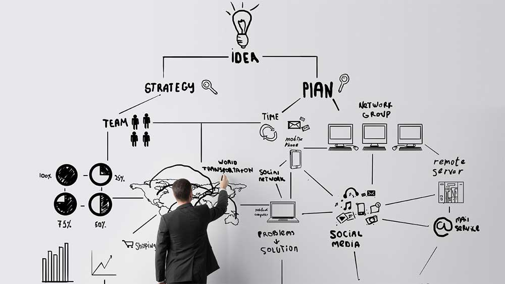

Projetos que utilizam conceitos de administração
Modelo de Negócio para Startup
Desenvolvimento de um modelo de negócio inovador para Startups, projetado na matéria. 
Inovação incremental para empresas
Dentro de uma empresa existente, os alunos puderam viver o cotidiano de desenvolvimento e criaram uma inovação incremental para essas empresas, projetado na matéria.
Voltar